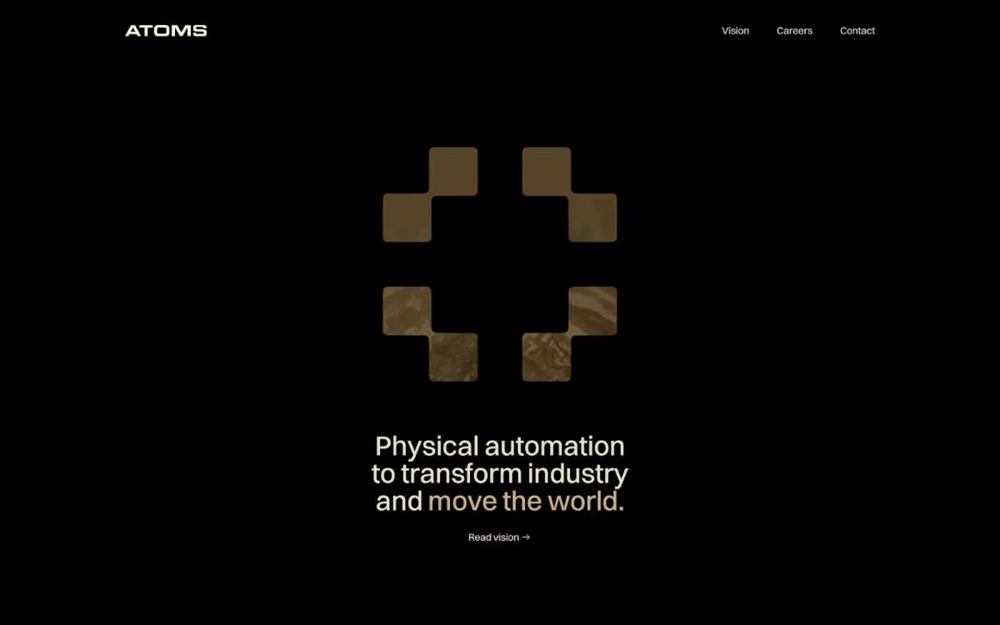

Atoms 的 Design.md 主题展示，围绕暗色界面、强视觉、实验风格组织页面。
Explore Atoms's dark Other design system: Absolute Zero #000000, Alabaster #fff7dd colors, Switzer, sans-serif typography, and DESIGN.md for AI agents.

#fff7dd: #fff7dd#000000: #000000#c8ad86: #c8ad86#66635f: #66635f#080808: #080808#171617: #171617#262525: #262525#393939: #393939#fcfcfc: #fcfcfc#de4c00: #de4c00#efa680: #efa680#040c06: #040c06display: Switzerbody: Switzermono: ui-monospacehints: Switzer,ui-monospace